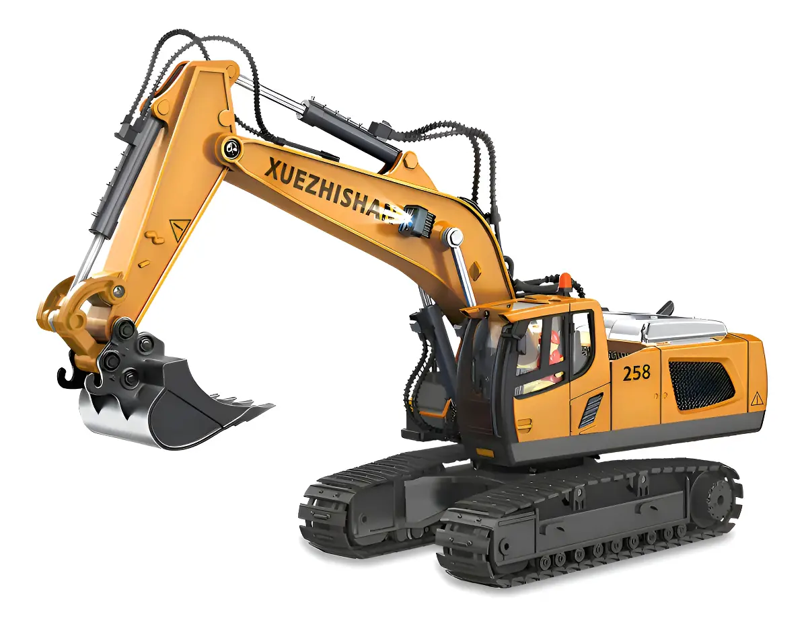

⌁ WEBSOCKET i
Conectando
Canal de eventos en tiempo realPanel de operación para tu excavadora Makasan. Controla los movimientos desde el joystick y observa cada comando en el canal de eventos.

Arrastra la perilla hacia la dirección deseada. Al soltar, vuelve al centro y envía DETENER si ese comando está disponible.
Los botones se generan con los comandos activos devueltos por la API.